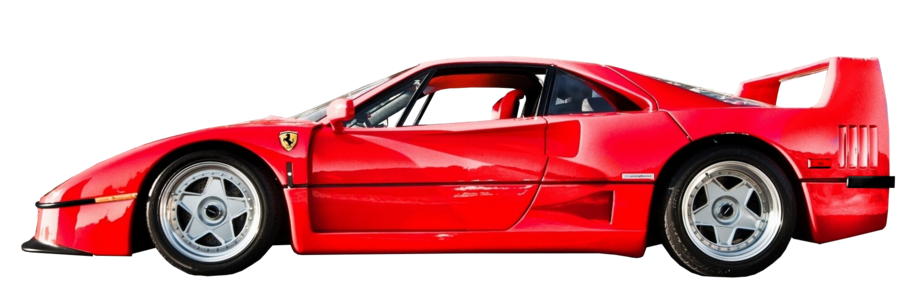
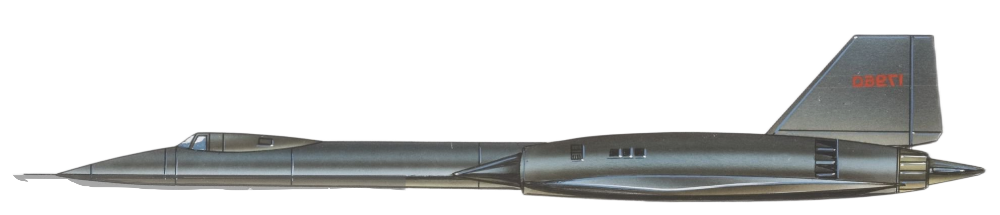

This is a Website about some of my favorite things

F-22 Raptor

The F-22 Raptor, a remarkable fifth-generation tactical fighter aircraft developed by Lockheed Martin for the United States Air Force (USAF), represents a pinnacle of technological achievement in the realm of military aviation. Since its introduction into service in 2005, the F-22 has continually demonstrated its superiority in terms of air dominance, thanks to its array of exceptional features and advantages.
One of the most striking characteristics of the F-22 is its stealth and low observable design. Its shape and specially formulated coatings render it nearly invisible to enemy radar systems, granting it a remarkable level of invisibility on the battlefield. This ability to avoid detection is further enhanced by the Raptor's reduced infrared signatures, making it exceedingly challenging for heat-seeking missiles to lock onto their target.
The F-22's supercruise capability is another distinguishing feature. It can sustain supersonic speeds without using afterburners, a capacity that not only grants it a substantial speed advantage but also improves its fuel efficiency. This is an essential attribute for maintaining extended combat operations.
Advanced avionics play a pivotal role in the F-22's capabilities. Its AN/APG-77 AESA radar is among the best in the world, providing the pilot with exceptional situational awareness and target tracking. The F-22's avionics suite allows for sensor fusion, consolidating data from multiple sources to generate a comprehensive and up-to-date battlefield picture, which is critical for making informed decisions during combat.
Maneuverability is yet another forte of the F-22. It boasts high agility, enabling it to perform extreme maneuvers with grace and precision. This agility is a fundamental asset in air-to-air combat, allowing the F-22 to outmaneuver and outperform its adversaries.
The F-22's speed and altitude capabilities are also exceptional. It can reach speeds exceeding Mach 2 and operate at altitudes exceeding 65,000 feet, providing a tactical advantage in various mission scenarios. These capabilities allow it to strike quickly and evade threats effectively.
The F-22's internal weapons bays contribute to its stealth and low observability. It carries its munitions internally, reducing its radar cross-section and preserving its stealth characteristics. The aircraft can carry a combination of air-to-air and air-to-ground weapons, including AIM-120 AMRAAM, AIM-9 Sidewinder, and JDAM munitions.
In addition to its primary role of air superiority, the F-22 is a versatile multirole aircraft. It can perform ground attack, electronic warfare, and signals intelligence missions, making it a valuable asset in a wide range of scenarios.
The F-22 is equipped with advanced countermeasures to protect itself from enemy threats, including radar-guided missiles. This means it can not only engage and destroy hostile aircraft but also defend itself effectively, adding another layer of survivability to its arsenal.
Communication is a critical aspect of modern warfare, and the F-22 excels in this regard. It features secure communication capabilities, allowing it to share real-time information with other friendly assets and command centers. This enables effective coordination and enhances its overall mission effectiveness.
This text was generated by ChatGPT

Ferrari F40

The Ferrari F40 is an iconic supercar that gained legendary status in the automotive world since its introduction in 1987. Created to celebrate Ferrari's 40th anniversary, the F40 was designed to be the ultimate road-legal sports car of its time. It featured a striking design characterized by aggressive aerodynamics, sharp lines, and a focus on lightweight construction.
Under the hood, the F40 was powered by a 2.9-liter twin-turbocharged V8 engine that produced a remarkable 471 horsepower. This engine was mated to a five-speed manual transmission, and the car featured rear-wheel drive. With a top speed of around 201 mph and a 0-60 mph time of just 3.8 seconds, the F40 was one of the fastest production cars of its era.
The F40's performance was matched by its minimalist interior. The cabin was spartan and focused on the driving experience, with lightweight materials and little in the way of luxury features. The car was known for its distinctive exposed gear linkage and the absence of power-assisted steering, which contributed to its pure, raw driving experience.
A key aspect of the F40's appeal was its lightweight construction. The body was made primarily of composite materials and featured a tubular steel frame, resulting in a curb weight of just over 2,400 pounds. This lightness, combined with the powerful engine, made the F40 incredibly agile and responsive on the road.
The F40's handling and aerodynamics were also highly advanced for its time. It featured a large rear spoiler and underbody aerodynamics that helped generate downforce, ensuring stability at high speeds. The suspension was tuned for sharp, precise handling, and it featured adjustable settings to cater to the driver's preferences.
With a limited production run of approximately 1,311 units, the Ferrari F40 has become a highly sought-after collector's car. Its exclusivity, historical significance, and timeless design have made it a prized possession among enthusiasts and collectors. The F40's performance and status as a true automotive icon have cemented its place in the pantheon of legendary supercars, ensuring its enduring appeal for generations to come.
This text was generated by ChatGPT

SR-71 BlackBird

The SR-71 Blackbird, an iconic reconnaissance aircraft, stands as a symbol of cutting-edge aviation technology and innovation. Developed by Lockheed's Skunk Works division in the 1960s, the SR-71 is a marvel of engineering that pushed the boundaries of aeronautical design.
One of the most remarkable features of the SR-71 is its incredible speed. It can fly at sustained speeds exceeding Mach 3, which is more than three times the speed of sound. This exceptional velocity allowed the aircraft to outrun and evade enemy missiles and fighters, making it nearly invulnerable during reconnaissance missions.
The SR-71's distinctive design is another standout feature. It has a slender fuselage and a long, needle-like nose, with its twin engines positioned above the wings. The aircraft's shape is optimized for high-speed flight and minimal radar cross-section, contributing to its legendary stealth capabilities.
Stealth is a defining characteristic of the SR-71. The aircraft's radar-absorbing materials and design minimize its radar signature, making it exceptionally difficult for adversaries to detect and track. This made it a highly effective reconnaissance platform during the Cold War.
The Blackbird's operational altitude is equally impressive. It can soar to altitudes of over 85,000 feet, well into the stratosphere. Flying at such extreme altitudes not only provided a strategic advantage but also allowed the aircraft to capture detailed intelligence images from great distances.
The SR-71's powerplant, two Pratt & Whitney J58 turbojet engines, is a technological marvel. These engines can operate at supersonic speeds and are equipped with afterburners to achieve and sustain the aircraft's extraordinary velocity. The SR-71's speed and altitude capabilities are unmatched to this day.
The SR-71 Blackbird holds several speed and altitude records, setting the bar for high-performance aircraft. Its legacy lives on as a testament to the innovation and engineering prowess of the aviation industry, leaving an indelible mark on the history of military and aerospace technology.
This text was generated by ChatGPT

Ford GT40 Mk II

The Ford GT40 Mk II is an icon in the world of automotive racing, with a legacy that transcends time. Born out of Henry Ford II's desire to beat Ferrari at the 24 Hours of Le Mans, the GT40 Mk II was the result of meticulous engineering and a burning competitive spirit. Introduced in 1966, it became an instant legend with its sleek design and powerful performance.
At the heart of the GT40 Mk II was its robust 7.0-liter V8 engine, delivering an impressive 485 horsepower. This powerhouse was coupled with advanced aerodynamics, making the GT40 Mk II a force to be reckoned with on the racetrack. Its low-slung profile and distinctive shape were not just for show; they were carefully crafted to maximize speed and efficiency, allowing the GT40 Mk II to slice through the air with minimal resistance.
The GT40 Mk II's defining moment came in 1966 when it secured a historic 1-2-3 victory at the 24 Hours of Le Mans, breaking Ferrari's dominance in the endurance race. The cars, driven by Bruce McLaren and Chris Amon, Ken Miles and Denny Hulme, and Ronnie Bucknum and Dick Hutcherson, crossed the finish line in a synchronized display of Ford's engineering prowess. This triumph marked the culmination of years of effort and determination to establish Ford as a dominant force in international motorsports.
Beyond its racing success, the GT40 Mk II's influence extended to the broader automotive industry, inspiring a generation of sports cars. Its performance on the track and distinctive design elements have left an indelible mark, and the GT40 Mk II continues to be celebrated as a symbol of American ingenuity and engineering excellence.
In recent years, Ford paid homage to its racing heritage by reintroducing the GT, a modern reinterpretation of the iconic GT40. The new GT retained the spirit of its predecessor while incorporating cutting-edge technology and design, ensuring that the legacy of the GT40 Mk II lives on in the 21st century.
The GT40 Mk II remains a collector's dream, with its historic significance and limited production numbers adding to its allure. Enthusiasts and historians alike recognize its pivotal role in shaping the landscape of motorsports, and its timeless design ensures that it will be remembered as more than just a car—it's a symbol of determination, innovation, and the pursuit of victory on the world's most challenging racecourses.
This text was generated by ChatGPT